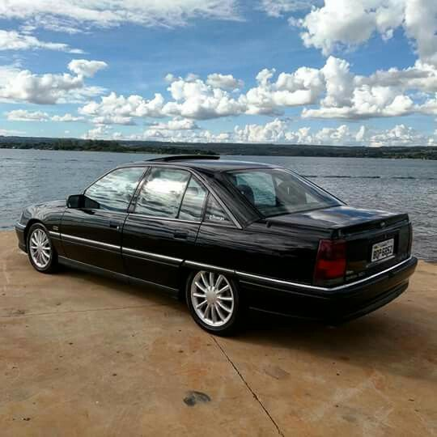
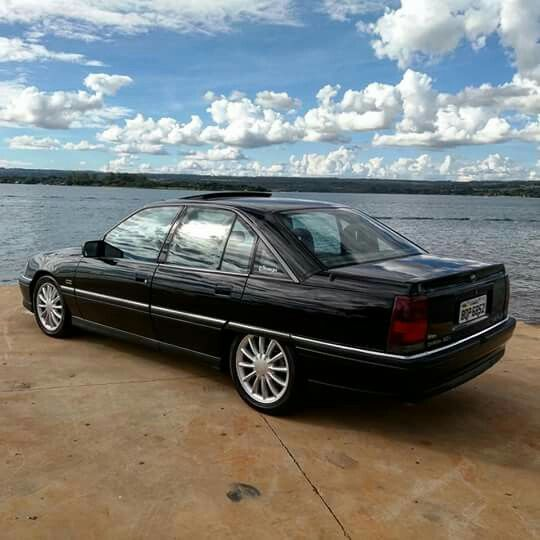
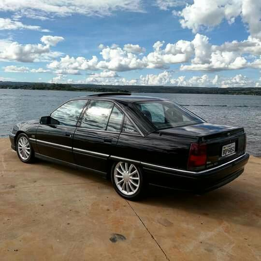
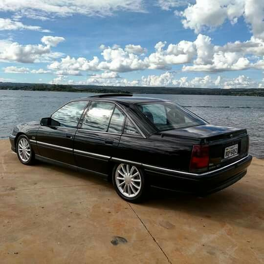

O Chevrolet Omega, lançado no Brasil em 1992 para substituir o Opala, é um sedã de luxo premium, desenvolvido pela Opel (subsidiária da GM na Alemanha). Destacou-se pela aerodinâmica moderna (Cx 0,30), tração traseira, suspensão independente e alto nível de conforto e tecnologia, com motores 2.0/2.2 de 4 cilindros ou os potentes 3.0/4.1 de 6 cilindros.
Produzido em São Caetano do Sul (SP) a partir de 1992 nas versões GLS (2.0/2.2) e a topo de linha CD (3.0 até 1994, 4.1 a partir de 1995). Também teve a perua Suprema.
3.0i (Alemanha): 6 cilindros em linha, ~165 cv, 23,4 kgfm.
4.1i (Nacional): 6 cilindros, 168 cv, 29,1 kgfm (conhecido pelo alto torque).
2.0/2.2i: 4 cilindros, mais econômicos.
Design e Conforto: Design "frente em cunha" com excelente coeficiente aerodinâmico. Oferecia ar-condicionado, vidros elétricos com um-toque, bancos confortáveis e, na versão CD, itens avançados como teto solar, computador de bordo, ABS e sistema de som Premium.
Transmissão e Tração: Tração traseira com câmbio manual de 5 marchas ou automático de 4 marchas.
Fim da Produção: A primeira geração foi fabricada até 1998, tornando-se um clássico nacional valorizado.
Em resumo, o Omega destacou-se por ser um carro europeu com robustez nacional, confortável para viagens e com desempenho esportivo na versão 6 cilindros.